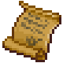

Note from unknown
| This article is a stub. You can help Graveyard Keeper Wiki by expanding it. |
| Note from unknown | |
|---|---|
 | |
General Information
| |
Type :
|
Quest |
Source(s)
| |
| Corpse | |
Technical Information
| |
Internal name:
|
i_scroll_3 |

Note from unknown is a message whose contents change depending on which ending you obtain at the end of the Beatrice's Offer questline.
Helping Beatrice
When you do not betray Lady Beatrice to Koukol you will find the Note from unknown on one of the 3 corpses that appear in the Morgue.
Dialogue
After entering the morgue, The Keeper will comment that: "Mmmm... Donkey never leaves corpses here. How Strange"
The note will then drop form one of the corpses.
The note then reads:
| "A tiny request my dear ~" |
| "the soldiers refused their injections." |
| "Whether they knew the truth or not, keeping them alive was an unnecessary risk." |
| "Get rid of the bodies as soon as possible." |
| "A thousand kisses, and stay in touch, our work together has just begun!" |
The keeper then comments: "Oh Crap...".
After reading you will immediately receive the Industriousness Perk.
Betraying Beatrice
When you betray Lady Beatrice to Koukol you will find the Note from unknown in the Donation box after performing your next Sermon.
The note reads:
| "You survived. my dear. What an amazing surprise." |
| "You survived - and dash all my plans." |
| "Not bad! But don't be surprised if your life soon turns into a nightmare." |
| "See you soon." |
The keeper then comments: "Well, at least... That's to be expected."
After reading you will immediately receive the Eloquence Perk.
| ||||||||